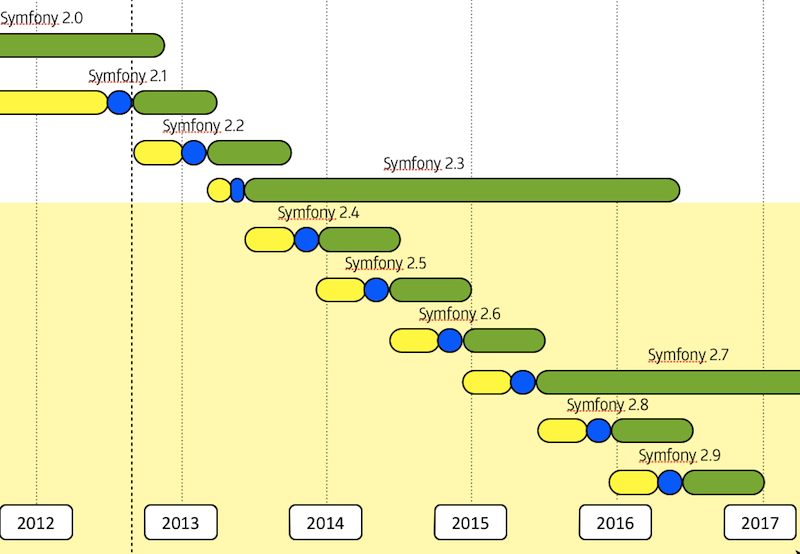

Este documento explica el proceso de versionado de Symfony (Symfony es el código alojado en el repositorio Git principal symfony/symfony).
Symfony gestiona sus versiones a través de un modelo basado en tiempo; cada seis meses sale una nueva versión de Symfony: una en Mayo y otra en Noviembre.
Nota
Este proceso de versionado fue adoptado a partir de Symfony 2.2, y todas las «reglas» explicadas en este documento se deben seguir estrictamente a partir de Symfony 2.4.
El periodo de seis meses se divide en dos fases:
Durante la fase de desarrollo, cualquier nueva característica se puede revertir si no será terminada a tiempo o si no estará lo suficientemente estable como para ser incluida en la versión final actual.
Cada versión de Symfony se mantiene durante un determinado periodo de tiempo, en función del tipo de la versión.
Una versión estándar se mantiene durante un periodo de ocho mes.
Cada dos años, se apoya una nueva versión mayor (también conocidas como versiones LTS por Long Term Support Release) será publicada. Cada versión LTS será apoyada por un periodo de tres años.
Nota
El apoyo pagado después de tres años con el apoyo prestado por la comunidad también se puede comprar en SensioLabs.
A continuación se muestra el cronograma de las primeras versiones que utilizan este modelo de edición:
Este se traduce en fechas y periodos de mantenimiento muy predecibles.
Después del lanzamiento de Symfony 2.3, la compatibilidad hacia atrás se mantendrá a toda costa. Si no es posible, la característica, mejora o corrección de errores se programará para la siguiente versión principal: Symfony 3.0.
Nota
El trabajo sobre Symfony 3.0 se iniciará cuando suficientes características principales de compatibilidad con versiones anteriores estén esperando en la lista de pendientes.
Este proceso de liberación se adoptó para dar mayor predecibilidad y transparencia. Se discutió basándose en los siguientes objetivos:
El periodo de seis meses fue elegido para ajustarse a dos lanzamientos en un año. Este también permite un montón de tiempo para trabajar en las nuevas características y permite que las características que no están listas se pospongan para la próxima versión sin tener que esperar demasiado tiempo para el siguiente ciclo.
El modo de mantenimiento dual se adoptó para hacer feliz a cada usuario de Symfony. Moviéndose rápido, a quién quiera trabajar con la última y más reciente, utilizando las versiones estándar: una nueva versión será publicada cada seis meses, y esta cuenta con un periodo de dos meses para actualizarse. Las empresas que deseen una mayor estabilidad pueden utilizar las versiones LTS: una nueva versión será publicada cada dos años y cuenta con un año para actualizarse.